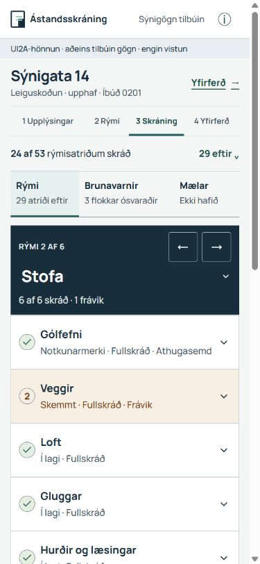
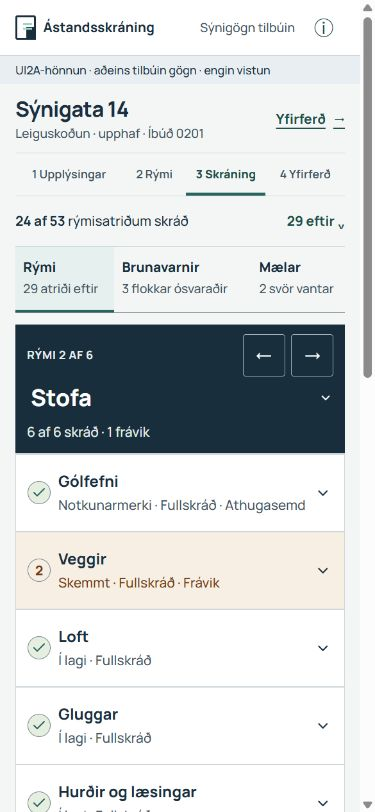
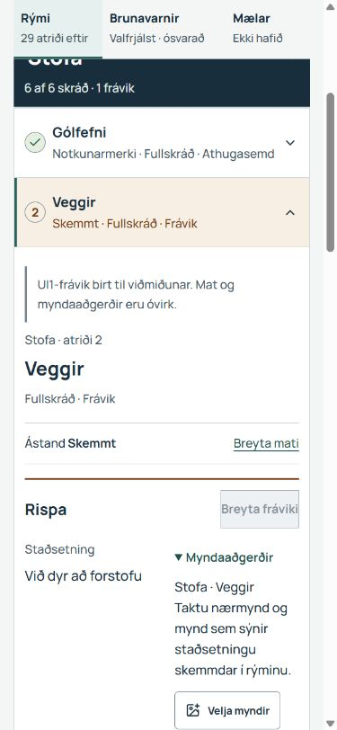

Raunverulegt app og tillaga
Sama tilbúna skýrslan: Sýnigata 14 → Stofa. 24 af 53 rýmisatriðum skráð; 29 ólokin. Aðalsamanburður sýnir síðutopp í báðum tilvikum.
UI1 hoppar þegar að rýminu á síma. Vandinn er líka að yfirsýn og aðgangur að öðrum hlutum verða eftir fyrir ofan lendinguna. Skoða raunverulega lendingu sérstaklega. Hún er ekki lögð að jöfnu við síðutopp í mælingunni.
| Skjár | Fyrsta röð frá toppi · UI1 → UI2A | Óskornar heilsíðumyndir |
|---|---|---|
| 360 × 800 | 769 → 471 px · 298 px ofar | Fyrir · Eftir |
| 390 × 844 | 769 → 471 px · 298 px ofar | Fyrir · Eftir |
| 1440 × 1000 | 777 → 465 px · 312 px ofar | Fyrir · Eftir |


Hvað breytist og hvers vegna?
- Þéttari eignarhaus og skref. Eignin er auðþekkjanleg; tvítekinn aðgangur og stór lóðrétt bil minnka. Raunveruleg vistunarstaða og villur verða áfram sýnilegar.
- Afmörkuð framvinda. „Rýmisatriði“ skýrir hvað 24/53 merkir. Brunavarnir, mælar, myndir og takmarkanir fá ekki falskt heildarhak.
- Hlutatenglar fylgja vinnunni. Rými, Brunavarnir og Mælar eru sýnileg með stöðu; öll eyðublöð eru áfram á sömu síðu. Ein stika festist við flettingu.
- Rýmisval og staða sameinast. Eitt heiti, ein stöðulína og fyrra/næsta. Rýmisvalið fær heila línu í síma; óþarfar núlltalningar hverfa.
- Samþykkt UI1 helst viðmiðið. Raunverulegar gátlistaraðir og fráviksbirting voru afrituð í hönnunarrýni. Matskóða appsins var ekki breytt.
Áskilið, valfrjálst og ólokið









„Valfrjálst · ósvarað“ merkir ekki lokið. Óvirkir mælar fá „Ekki hafið“. Fullskráð frávik heldur fráviksmerkingu. Virkni og þrif haldast sjálfstæð svör. Staðfestingarþörf, varðveitt gögn og takmarkanir fá áfram rétta sértæka stöðu.
Aðgengi og mörk sannprófunar
Grunnleiðir með Tab og Enter, innbyggt rýmisval, sleppitengill, rýmaskipti, hlutaferð og fókus aftur í sama atriði voru skoðuð. Engin lárétt síðuskrollun sást við 320/360/390/1440 CSS px. Ný aðalstýring miðar við 44 px snertihæð. Orðaðar stöður og fókusrammi halda merkingu óháð lit.
Prófunarniðurstöður · 320 CSS px · Ólokin atriði · Desktop-frávik


Ekki staðfest WCAG 2.2 AA-samræmi. Rauntæki, skjálesari, vafraaðdráttur, textastækkun, símatakkaborð og kamera eru enn óprófuð. Mat og vistun eru óvirk í frumgerðinni. Hún sannar ekki rekstrarhæfi eða gagnavernd.
Áhætta og næstu skref eftir samþykkt
Helsta áhættan er að færðir wrapperar endursetji ritla eða myndir, ný stika hylji fókus, eða leiðrétting missi sértæka upprunaleið. Nota þarf núverandi mats-, vöntunar- og correction-hjálpara. Ekki bæta nýjum almennum query-lyklum á sérleiðir brunavarna eða mæla; núverandi sannprófun hafnar þeim.
- Samþykkja upplýsingaskipan, fyrstu lendingu og stöðutexta.
- Þétta skjáskel Skráningar með raunverulegum vistunar- og villustöðum.
- Færa núverandi einingar og tengja hluta-/rýmisleiðir með stöðug auðkenni.
- Keyra markvissa UI1-, navigation-, fire-, meter-, heating-, evidence-, comparison- og report-preview-afturhvarfslotu.
- Prófa rauntæki og hjálpartækni; fá óháða lokaúttekt.
Ákvarðanir til samþykktar
- Rýmisgátlisti fyrst, brunavarnir og mælar á eftir, með alltaf sýnilegri stöðu og einum aðgangstengli að hvoru.
- Ný fyrsta lending við þéttan topp; áframhald og leiðrétting halda markstað. Núverandi app hoppar þegar að rýminu, svo þetta er meðvituð breyting.
- Orðaðar sjálfstæðar stöður og áfram meðvitað tilgangsval mæla. Engin ný skylduregla eða sjálfvirk virkjun er samþykkt með þessari tillögu.
Lesa alla íslensku rýnina, varðveislusamning og innleiðingaráætlun